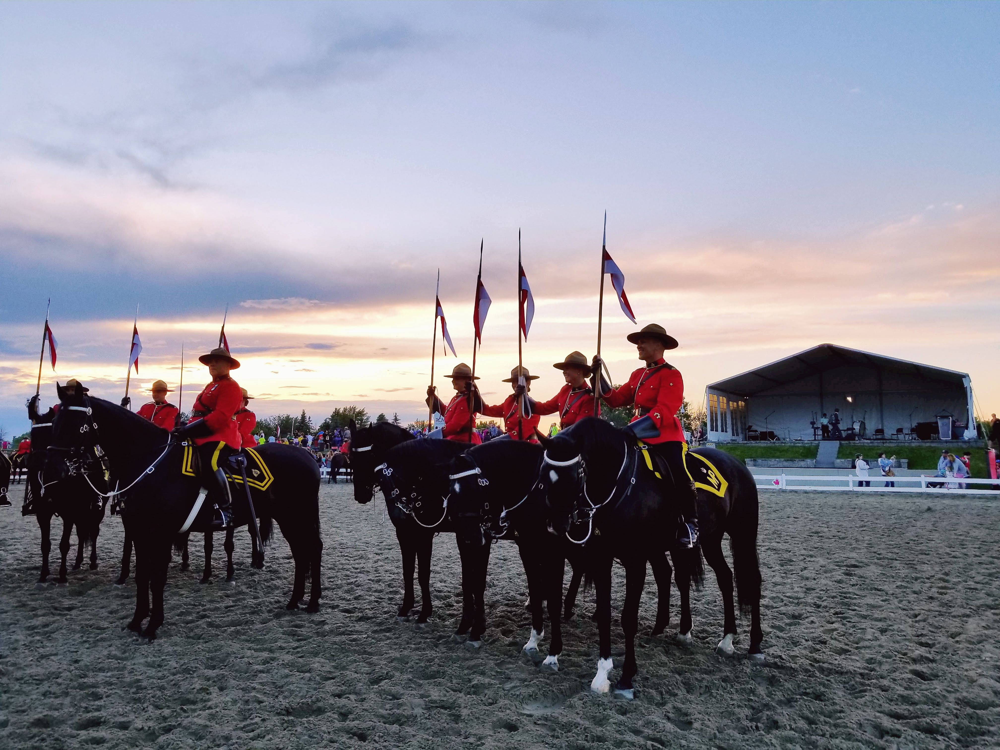
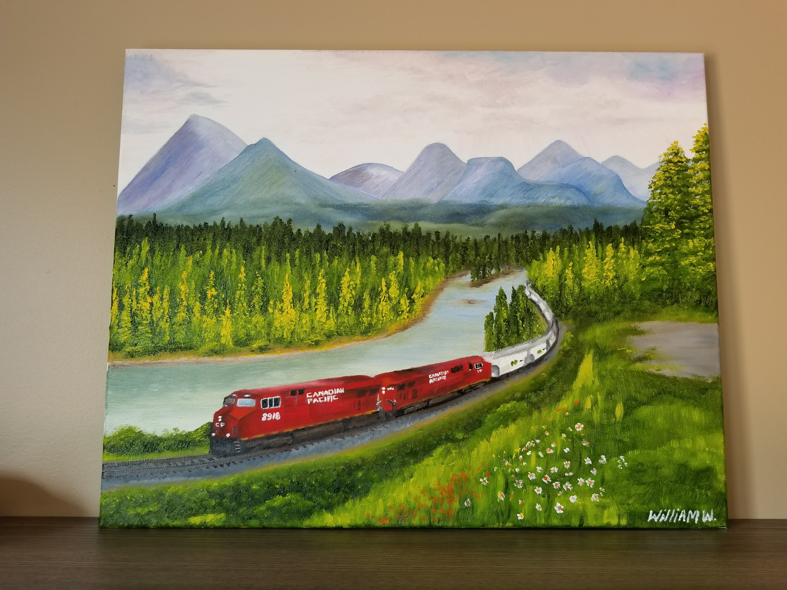
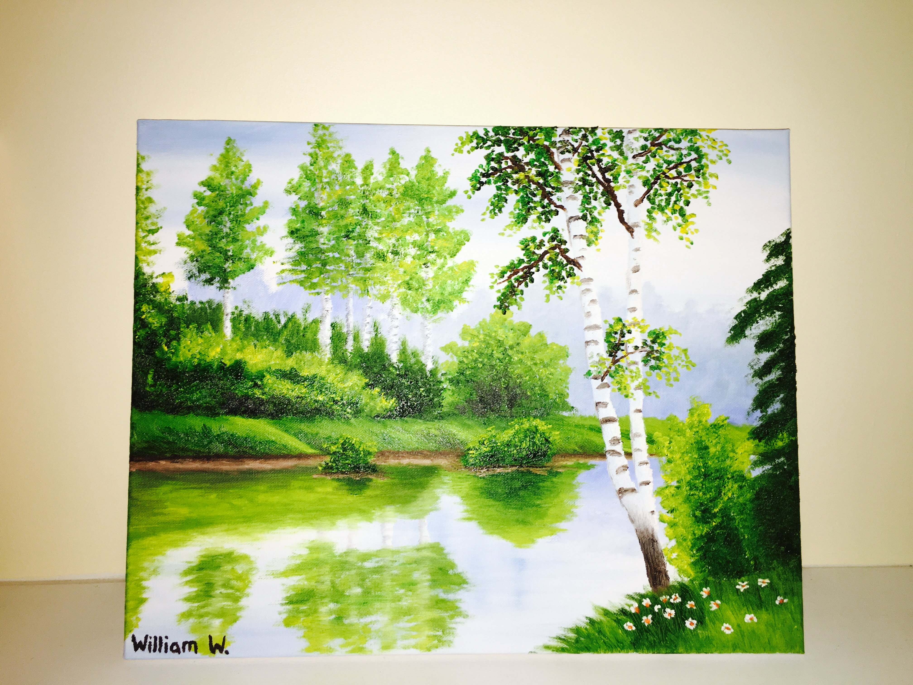

Hobbies
Photography
I enjoy taking photos! Often times I just use my phone. Here are some of my favourites!
Toronto skyline from Kensington Market
Pumpkinferno at Upper Canada Village
Peggy's Cove lighthouse, Nova Scotia
Tulip Festival in Ottawa
Hiking up Mt. Washington, New Hampshire
Lion's Head lighthouse, Bruce Peninsula, Ontario
Xi'an, China
Xi'an, China
Eagle's Nest lookout, Calabogie, Ontario
U of T Campus in the fall
Niagara Falls at sunrise

RCMP Musical Ride in Ottawa
Drawing & Painting
I enjoy oil painting as well as digital art on my iPad.
Freight train in the Rocky Mountains (oil painting)

Forest (oil painting)

VIA Rail train (digital painting)

Fall leaves (digital painting)

TTC streetcar (digital sketch)

Vintage car (digital sketch)